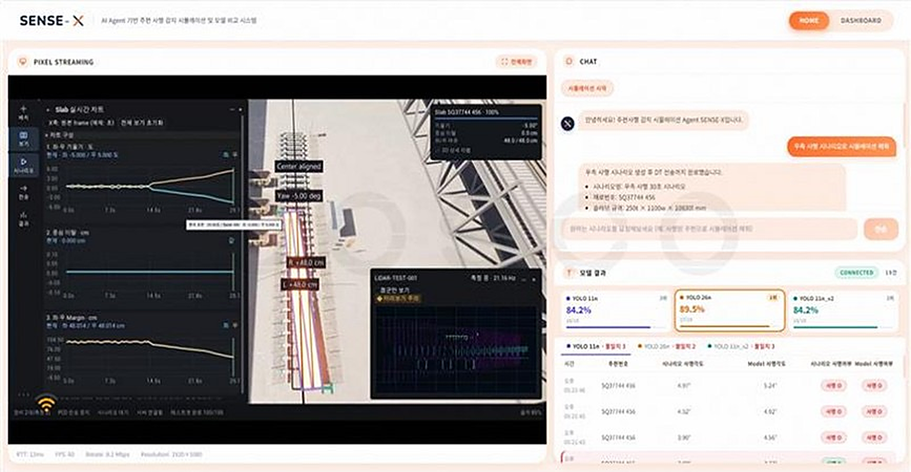
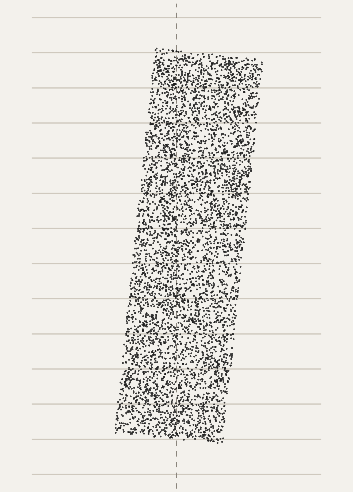
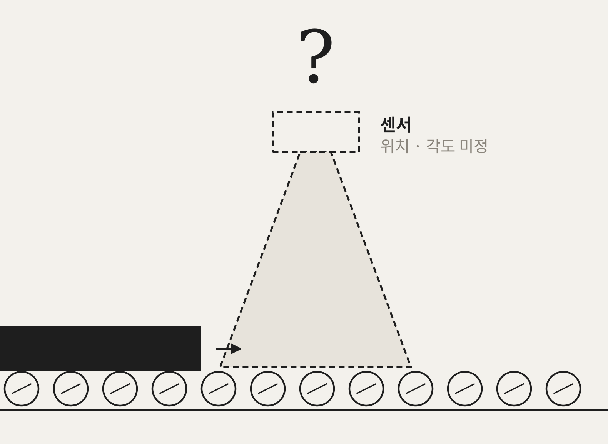
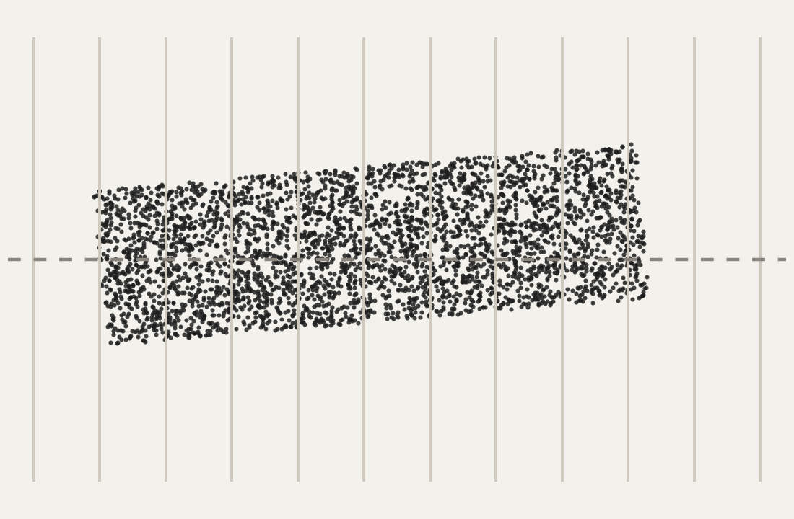
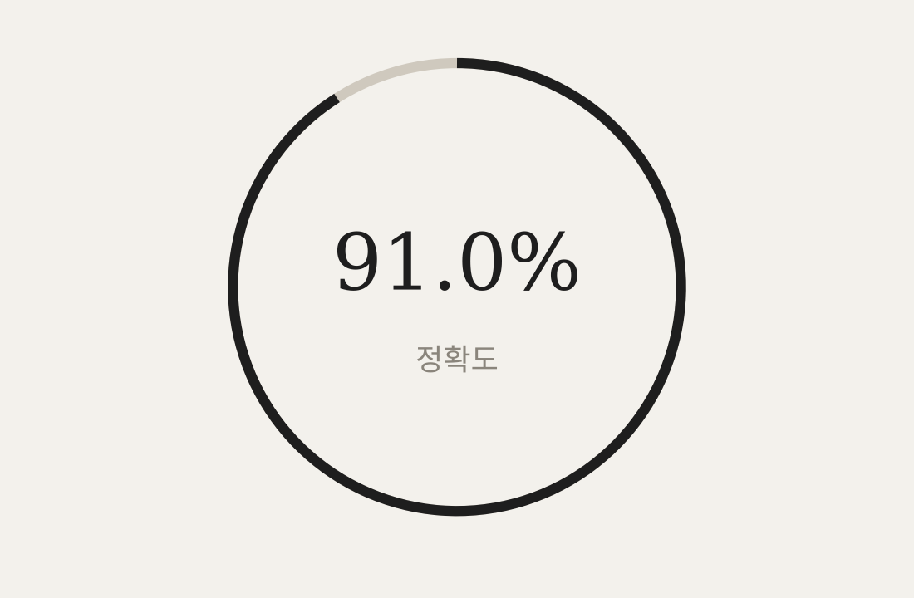
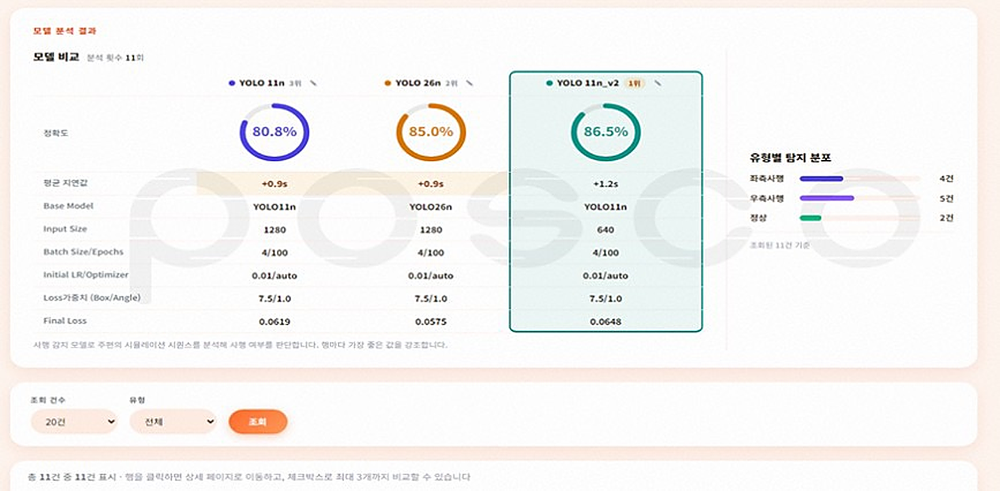
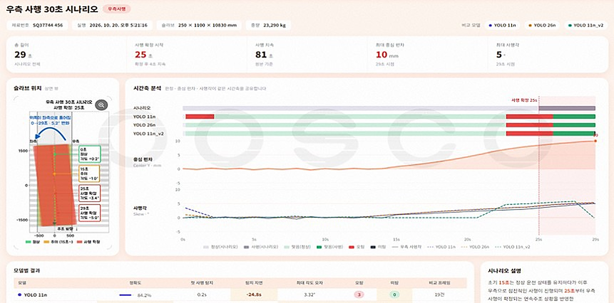
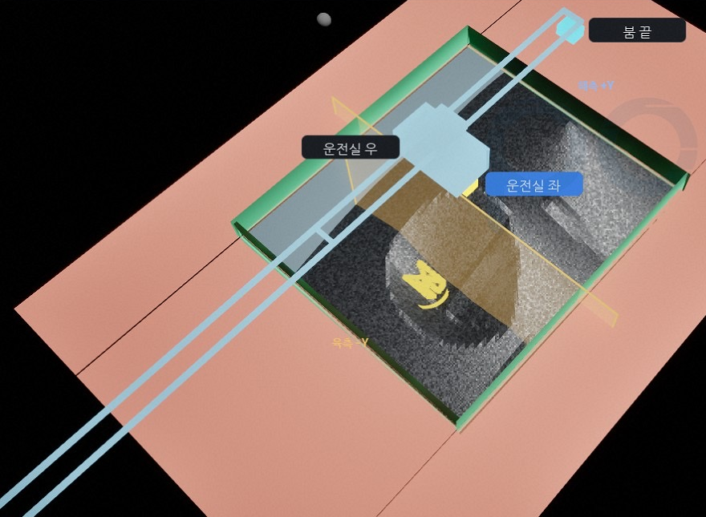
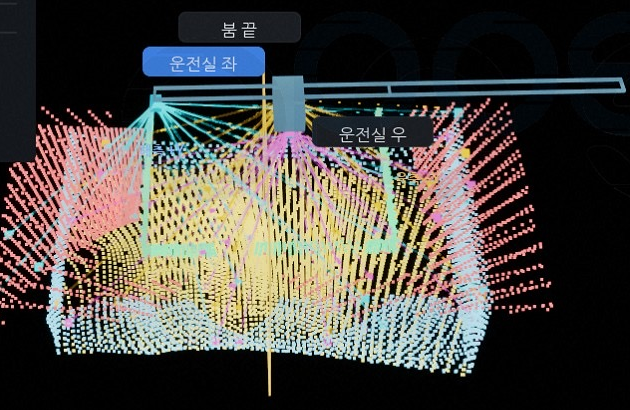

13D Simulation2자연어 채팅 · Agent SENSE3모델 결과 수신


시나리오 작성, 시뮬레이션, 데이터 수집, 모델 학습·평가를 따로 수행해 매번 수작업으로 연결
조업 조건과 센서 설정을 개발자가 직접 구성해 다양한 조건 시험과 재현이 어려움
현장 설치 전에는 학습용으로 사용할 조업 데이터가 없고, 이상 상황에 대한 데이터를 쉽게 수집할 수 없음

자연어 요청을 시나리오(JSON)로 변환

Slab 사행 재현, 가상 LiDAR PCD 생성

가상 데이터로 모델 학습·테스트



자연어 시험 요청
통합 화면 (React)시나리오 생성
LLM · JSONSlab 재현 · 가상센서 데이터 생성
Unreal Engine · PCD모델 학습·테스트
Python · YOLO인수·운영에 머물지 않고 기획부터 센서 배치 검토, 모델 검증까지 직접 진행
기존 Digital Twin(Unreal) 3D 에셋과 구축 경험을 참고해 시뮬레이션 전용 가상 현장을 재구성
수작업으로 생성하던 시험 조건을 자연어 요청으로 자동 생성하여 실행까지 수행
| 기존 | SENSE-X | |
|---|---|---|
| 시험 조건 구성 | 개발자 개별 설정 | 자연어 요청으로 시나리오 생성 |
| 센서 배치 검토 | 설치 후 적정성 확인 | 설치 전 위치·각도 조건 비교 |
| 이상 상황 데이터 | 현장 발생 시에만 수집 | 원하는 조건으로 반복 재현 |
| Digital Twin 기술 | 모니터링 중심 | 데이터 생성·모델 검증으로 확장 |
이동체 위치·이탈, 관측 범위 검토에
시나리오·센서 기능 재사용
시나리오·데이터 인터페이스·
모델 실행 방식 표준화
센서 과제 검토 시 먼저 거치는
공통 단계

원료 하역 · 석탄 · 그랩식 언로더
LiDAR 3대 (붐 끝 · 운전실 좌·우) · 약 10 Hz

왼쪽 3D · 그랩 하역 시뮬레이션
위 LiDAR PCD · 분류 표시